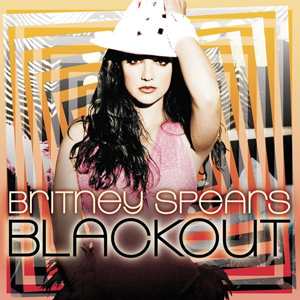

1. Blackout (2007)

Blackout is the fifth studio album released by Britney Spears on October 25, 2007, by Jive Records. The album consists of 15 tracks with a Electropop, Dance-pop, R&B, Dubstep, and Euro disc sound.
2. In The Zone (2003)

In The Zone is the fourth studio album released by Britney Spears on November 15, 2003, by Jive Records. The album consists of 13 tracks with a Dance-pop, Contemporary R&B, and Hip-hop sound.
3. Britney (2001)

Britney is the third studio album released by Britney Spears on October 31, 2001, by Jive Records. The album consists of 12 tracks with a Pop, R&B, Hip-hop, Rock, Electronica, and Disco sound.
4. Oops!... I Did It Again (2000)

Oops!... I Did It Again was the second studio album released by Britney Spears on May 3, 2000, by Jive Records. The album consists of 12 tracks with a Pop, Dance-pop, Teen-pop, Funk, and R&B sound.
5. Circus (2008)

Circus is the sixth studio album released by Britney Spears on November 28, 2008, by Jive Records. The album consists of 15 tracks with a Pop and Dance sound.